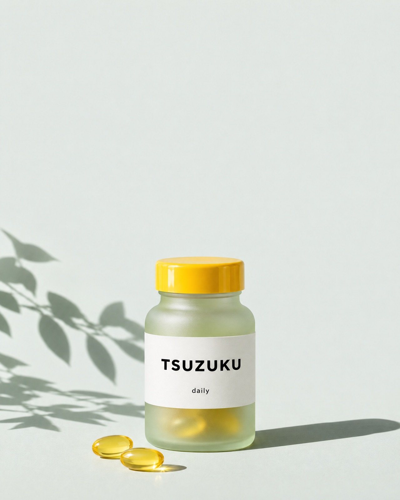
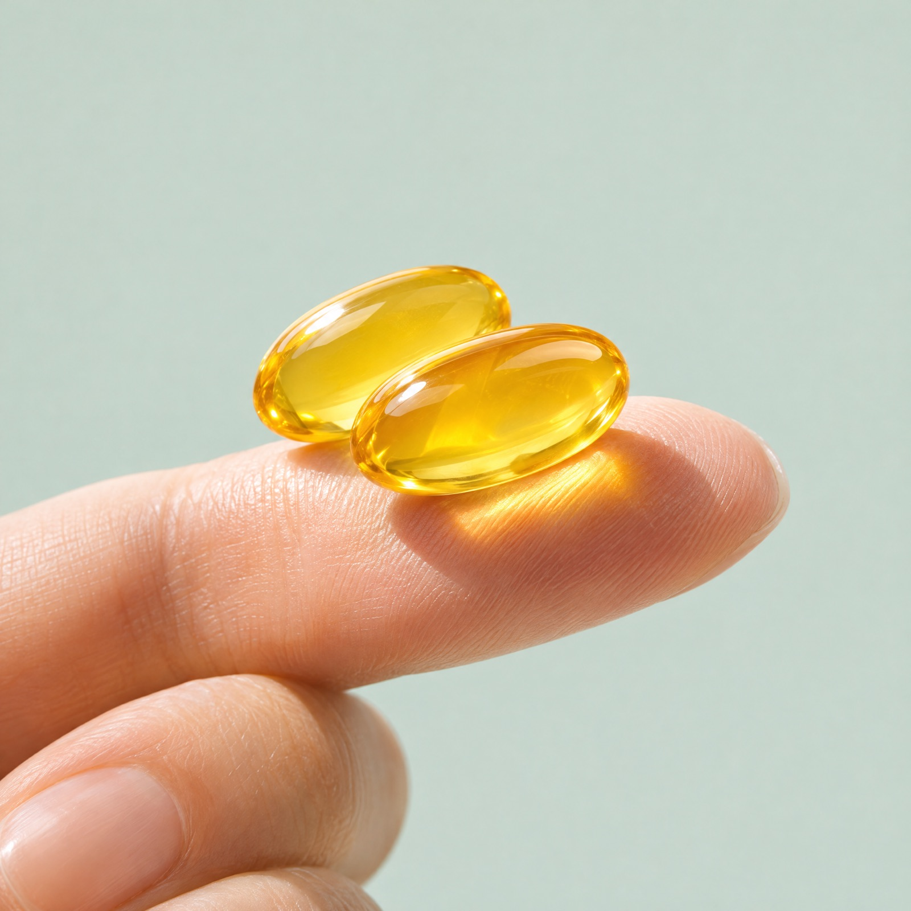
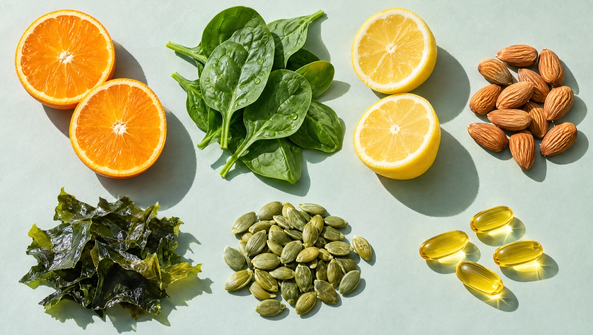

★★★★★
「2粒なら、朝のコーヒーのついでに飲めます」
何粒も飲むサプリは続きませんでした。粒が小さくて、飲み忘れても次の日に戻りやすいです。
30代・会社員（定期便8か月）
提案用サンプル（架空ブランド）｜定期便なら初回30%OFF・いつでも休止できます
ビタミン13種とミネラル8種を、1日2粒に。食事で取りきれない日のために、続けやすい粒の大きさと値段にしました。


サプリは、続けてこそ。何粒も飲む手間と、毎月の負担をできるだけ小さくしました。
2粒あたりの配合量です。中身が分かるから、ほかのサプリや食事と組み合わせやすくなります。

※配合量はサンプルの数値です（架空のブランド）。
3分の質問で、
食生活をチェック。
朝ごはん、外食の回数、野菜の量。いくつかの質問に答えると、TSUZUKUの飲み方の目安をご案内します。
「2粒なら、朝のコーヒーのついでに飲めます」
何粒も飲むサプリは続きませんでした。粒が小さくて、飲み忘れても次の日に戻りやすいです。
30代・会社員（定期便8か月）
「成分表がはっきりしていて選びやすかった」
何がどれだけ入っているか全部書いてあるので、ほかに飲んでいるものとも比べられました。
30代・エンジニア（定期便5か月）
※サンプルのため、レビュー・人物は架空です（写真はAI生成）。感想は個人のもので、効果を示すものではありません。
回数のしばりはありません。1回目のお届け後でも、マイページから休止・解約できます。
30日・45日・60日から選べます。次回お届けの5日前まで、マイページで変更できます。
お薬を飲んでいる方、通院中の方、妊娠中・授乳中の方は、医師や薬剤師にご相談のうえお召し上がりください。
成人向けの量で作っています。お子さまへのご使用はお控えください。
クレジットカード、コンビニ後払い、Amazon Pay に対応しています（サンプルの表記です）。
定期便 初回30%OFF
¥2,786（税込）